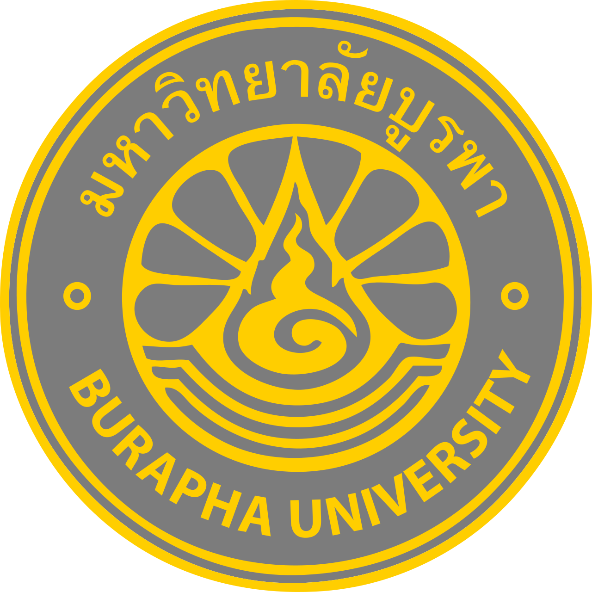

มหาวิทยาลัยบูรพา คณะบริหารธุรกิจ สาขาการบัญชี
ดิฉันมีความสนใจในด้านการบัญชี เพราะเป็นสาขาที่ต้องใช้ความละเอียดรอบคอบ การคิดวิเคราะห์ และการจัดการข้อมูล ซึ่งเป็นทักษะที่ดิฉันอยากพัฒนาตนเองให้มีความสามารถมากขึ้น ดิฉันจึงอยากศึกษาต่อในสาขาการบัญชี เพื่อเรียนรู้ทั้งความรู้ทางด้านบัญชีและทักษะที่สามารถนำไปใช้ในการทำงานจริงในอนาคต
ดิฉันมองว่ามหาวิทยาลัยบูรพาเป็นสถานที่ที่เหมาะกับการเรียนรู้และพัฒนาตนเอง ดิฉันต้องการได้รับความรู้และประสบการณ์ใหม่ ๆ จากการเรียน รวมถึงการเข้าร่วมกิจกรรมต่าง ๆ ของมหาวิทยาลัย เพื่อฝึกความรับผิดชอบ การทำงานร่วมกับผู้อื่น และเตรียมความพร้อมสำหรับการทำงานในอนาคต
หากดิฉันได้รับโอกาสเข้าศึกษาที่มหาวิทยาลัยบูรพา ดิฉันจะตั้งใจเรียนและพยายามพัฒนาความรู้ด้านการบัญชีอย่างเต็มที่ พร้อมทั้งเข้าร่วมกิจกรรมที่เป็นประโยชน์ ฝึกการทำงานเป็นทีม และพัฒนาทักษะต่าง ๆ ที่จำเป็นต่อการประกอบอาชีพ
หลังจากสำเร็จการศึกษา ดิฉันหวังว่าจะสามารถนำความรู้และประสบการณ์ที่ได้รับไปประกอบอาชีพในสายงานบัญชี เช่น นักบัญชี หรือทำงานด้านการเงินและบัญชี และตั้งใจพัฒนาตนเองอย่างต่อเนื่อง เพื่อให้สามารถทำงานได้อย่างมีประสิทธิภาพและประสบความสำเร็จในอนาคต